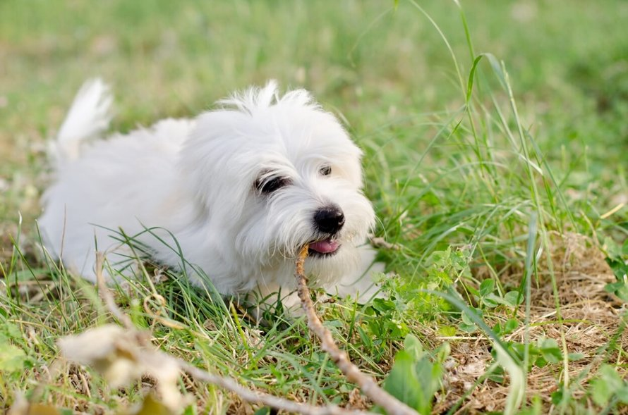

Info: beskrivelse af opgaven
I denne opgave har jeg implementeret en API, for at få en tilfældigt billede af en hund.
For at se billeden, har jeg lavet en function i javascript, som fetcher data fra api, og bagefter sourcer jeg sourcer billeden til en img tag i "index.html".
Vi fortsat arbejder med Progressive Web App og vi klargører appen snart til caching strategi.
